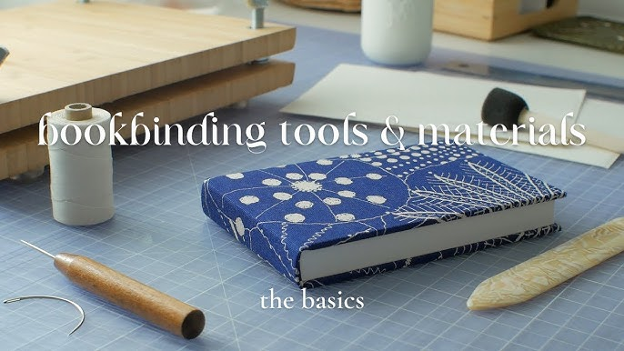

The Art of Bookbinding
Bookbinding is a timeless craft that combines artistry and functionality. It involves the processes of physically assembling a book from an ordered stack of sheets of paper or other material. Whether for creating a personal journal or restoring a vintage book, mastering this art can be incredibly fulfilling.
In bookbinding, the choice of materials is paramount. Traditional techniques often utilize leather, cloth, and high-quality paper. Each element contributes not only to the aesthetic but also to the durability of the book. Learning how to choose the right materials can elevate your bookbinding projects significantly.
Moreover, bookbinding is an excellent way to express your creativity. You can personalize each piece with unique covers, bindings, and even your own illustrations. This craft encourages experimentation and innovation, allowing you to create books that reflect your individual style and stories.
Leave a Comment